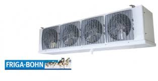

Compressor care
Bitzer compressor maintenance: 5 steps that extend service life
A practical checklist for oil replacement, valve inspection, and
high-temperature operation best practices for Bitzer
compressors...
Read article ->

Cold rooms
Why Friga-Bohn evaporators perform well in food warehouses
How air throw and air circulation patterns in Friga-Bohn units
impact product stability and cold room efficiency...
Read article ->

Modern techniques
Blast freezing vs conventional freezing: what actually changes
A technical explanation of how blast-freezing preserves biological
properties of meat and vegetables through rapid thermal shock...
Read article ->

Design engineering
Cold room heat load calculation: the complete engineering guide
How to accurately calculate refrigeration load - a comprehensive
guide to heat sources and design equations for practising
engineers...
Read article ->

Cold rooms
Cold room door types: the correct engineering selection guide
Sliding, spiral, or hinged? A complete guide to selecting a cold
room door based on operating temperature and traffic volume...
Read article ->

Compressor care
Condensing unit maintenance in hot climates: a comprehensive
practical guide
Maintenance schedules for condensing units in the Gulf's extreme
heat, including how to address high condensing pressure and
condenser fouling...
Read article ->

Technical comparisons
Copeland Scroll vs reciprocating: which is better for your
refrigeration project?
A comprehensive engineering comparison on efficiency, cost,
reliability, and operating conditions to help you choose the right
compressor...
Read article ->

Control systems
Configuring the Danfoss EKC controller for cold rooms:
step-by-step
An engineering guide for setting up Danfoss EKC 202 and EKC 361:
temperature setpoints, defrost scheduling, alarm intervals, and
control logic...
Read article ->

Energy efficiency
8 practical ways to cut cold room electricity costs by 40%
Improving thermal insulation, tuning controllers, scheduling
defrost cycles, and selecting the right evaporator -
field-verified energy strategies...
Read article ->

Field maintenance
Detecting and repairing refrigerant gas leaks: the complete field
guide
Symptoms of R404A, R410A, and R22 leaks, electronic detection
methods, and step-by-step repair procedures with pressure and
charge standards...
Read article ->

Thermal insulation
Sandwich panel specifications for cold and freezer rooms: the
complete engineering guide
Required thicknesses per temperature range, U-value thermal
transmittance, metal facing types, and selection criteria for
industrial cold storage...
Read article ->

Industrial refrigeration systems
Ammonia refrigeration systems R717: complete guide to design,
safety and operations
A comprehensive engineering guide to R717 systems: technical
advantages, design calculations, safety requirements, and a
detailed comparison with modern HFC refrigerants...
Read article ->

Regional projects
Cold rooms in Dammam and the Eastern Province: the complete
installation and design guide
A comprehensive engineering guide for designing and installing cold
rooms in Dammam, Khobar, Jubail, and Al-Ahsa — Gulf climate
requirements and thermal load considerations...
Read article ->

Compressor care
Bitzer compressor maintenance in hot regions: pressure, oil and
operations schedules
A comprehensive guide for maintaining Bitzer compressors in the
Gulf's extreme climate - maintenance schedules, pressure
benchmarks, and correct lubrication oil specifications...
Read article ->

System diagnostics
Superheat and subcooling: the complete engineering guide to
measurement, diagnostics and TXV tuning
A practical reference for reading superheat and subcooling
correctly and using them to diagnose undercharge, liquid-line
restrictions, TXV feeding problems, and poor condenser
performance...
Read article ->